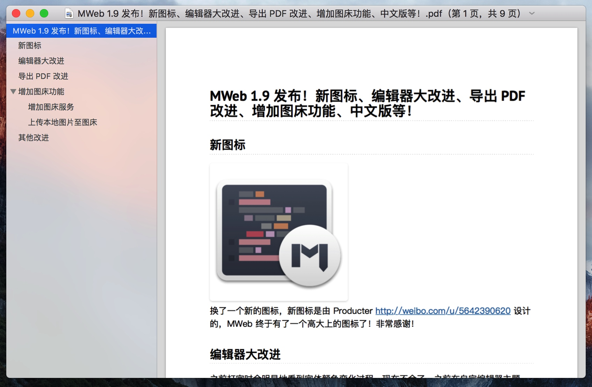
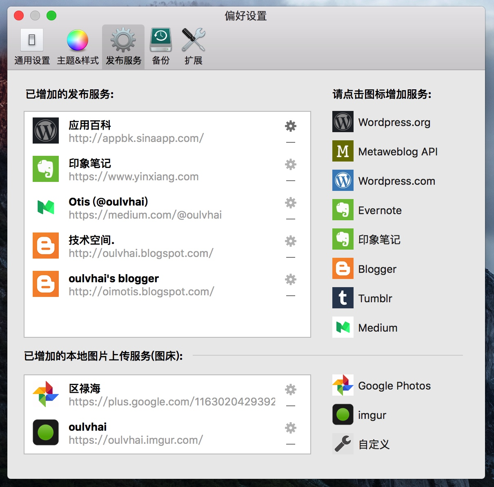
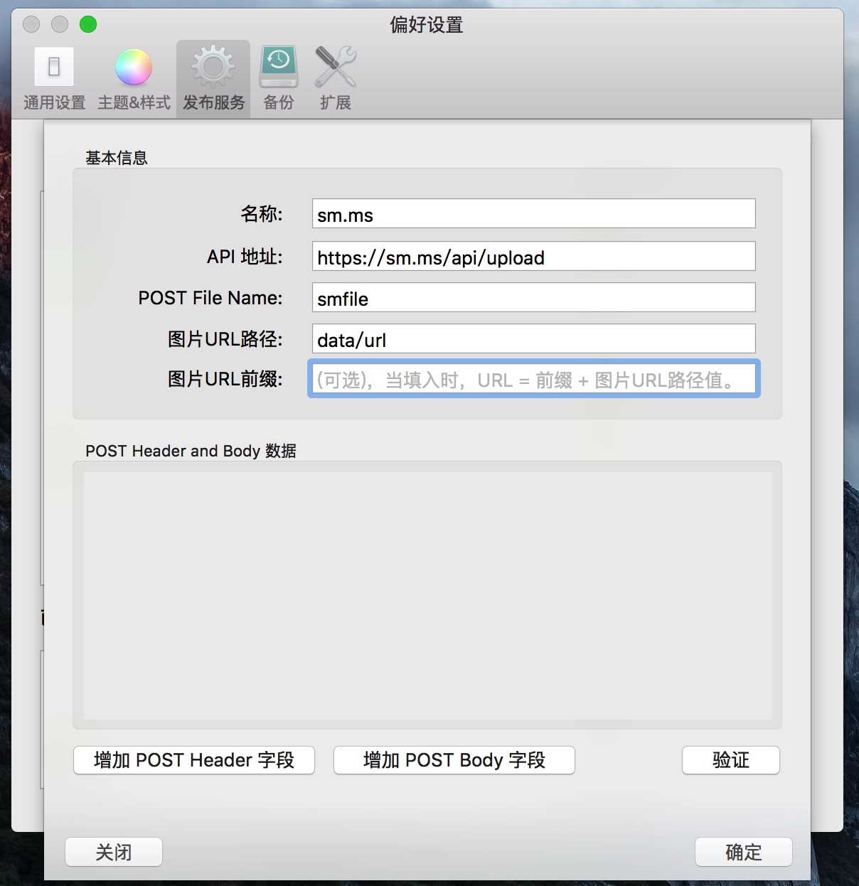
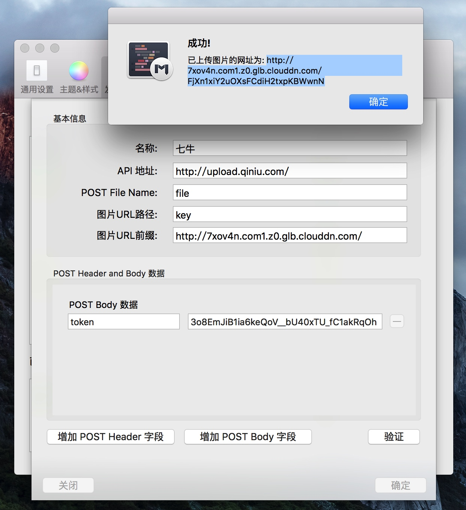
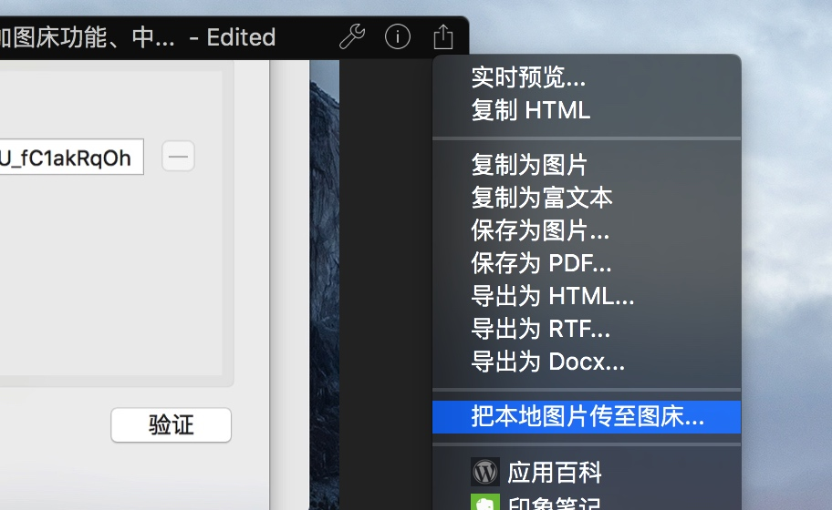
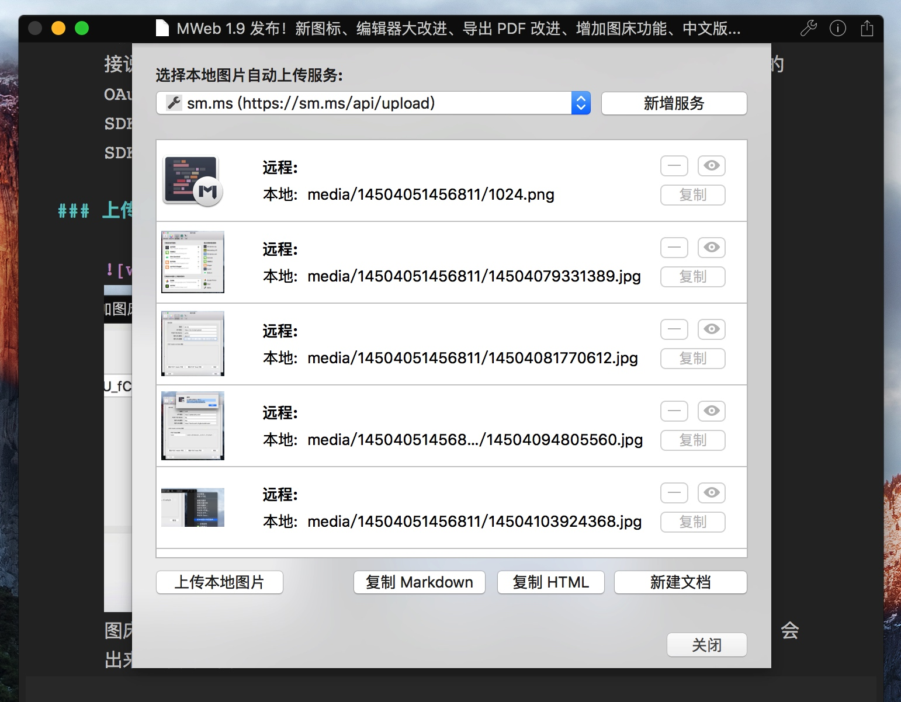
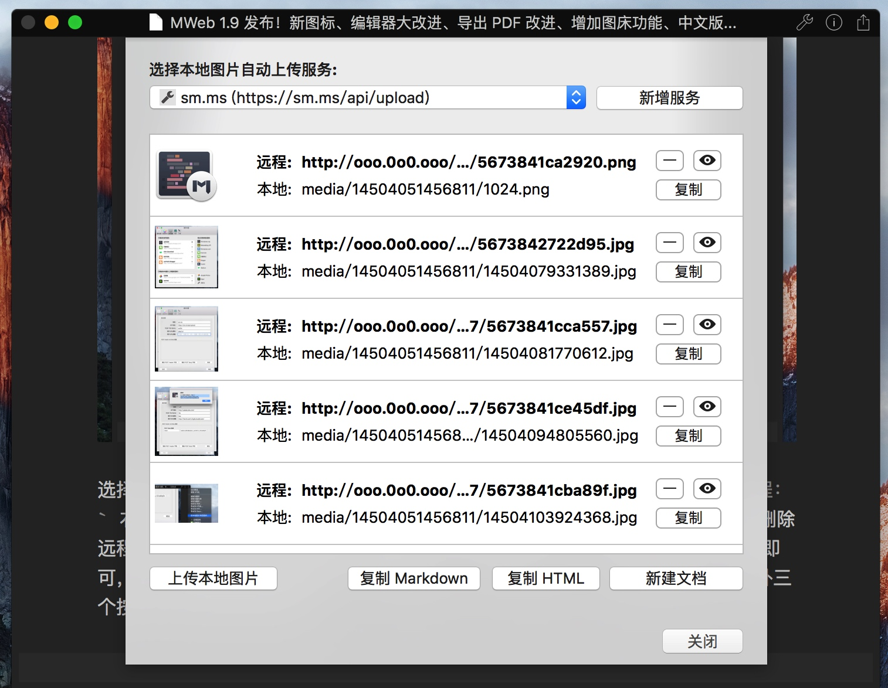
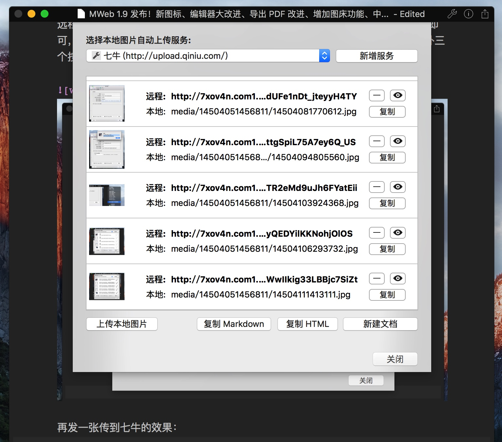

MWeb 1.9 发布！新图标、编辑器大改进、导出 PDF 改进、增加图床功能、中文版等！
新图标

换了一个新的图标，新图标是由 Producter http://weibo.com/u/5642390620 设计的，MWeb 终于有了一个高大上的图标了！非常感谢 Producter！
编辑器大改进
之前打字时会明显地看到字体颜色变化过程，现在不会了。之前在自定编辑器主题时，如果设置标题字体比较大，会明显看到字体变大过程，现在也修正了这个问题。MWeb 一直都是花比较多的时间在编辑器改进上，之后的版本也会这样做。
导出为 PDF 改进
之前导出的 PDF 中，如果有 TOC 和 footnote，在 PDF 中点击时，是不正常的，不会跳到想要的位置。1.9 版修正了这个问题！另外 1.9 版在导出时还可以选择是否为 PDF 生成大纲视图（目录）。要注意的是这两个功能在 Lite 版中是没有的。现在开始慢慢加强和改进付费版了，希望能有多一点人购买，然后购买了的朋友也能觉得值，另外图床功能也是只支持付费版的。下图是为 PDF 增加目录后的效果。

增加图床功能
MWeb 在编写 Markdown 文档时，不管文档库还是外部模式，插入图片都是复制原图到合适的位置，然后以相对引用的方式引用图片。这样做的好处是在编写文档时会感到非常顺畅，不会有等待图片上传完然后再复制地址的问题，然后图片也不会依赖于网络服务。这样就几乎不会丢失图片了（插入非图片也是这样处理的）。
当要把文档发布出去时，比如说导出 html，MWeb 会把本地的图片也一并导出。另外发布到 evernote、wordpress、blogger、medium 等服务，MWeb 也是会把本地图片上传到所属的服务。
现在再增加了图床功能，这样的话基本上就满足大部分使用情景了。下面介绍一下怎么使用这个图床功能。
增加图床服务
像发布服务那样，首先要增加图床服务，在 偏好设置 - 发布服务 里，目前可以增加三种图床服务：Google Photos、imgur、自定义。前两种不用多说，点击然后用所属帐号登入即可，注意先翻墙就没问题了。主要要介绍的是自定义，如下图：

我会使用 https://sm.ms/doc/ 这个图床做介绍，主要是它的 API 最简单，按 API 说明填入相关信息如下：

需要说明的有：
POST File Name：这个是指表单的图片上传的名称
图片 URL 路径：是指返回的 JSON 结果中的图片网址值的路径。比如说 sm.ms 说明文档中，返回的 JSON 结果如下：
{
"code": "success",
"data": {
width: 1157,
height: 680,
filename: "image_2015-08-26_10-54-48.png",
storename: "56249afa4e48b.png",
size: 69525,
path: "/2015/10/19/56249afa4e48b.png",
hash: "nLbCw63NheaiJp1",
timestamp: 1445239546,
url: "https://ooo.0o0.ooo/2015/10/19/56249afa4e48b.png",
delete: "https://sm.ms/api/delete/nLbCw63NheaiJp1"
}
}
可以看到它返回的图片的网址是 data 下的 url 字段的值，所以就填入 data/url，要注意的是，只支持 JSON 返回结果。
图片 URL 前缀：这个是由于有些 API 可能只返回图片的保存位置，比如说七牛（只返回 key 和 hash），它还要在前面加上一个固定的网址才能得到真正的图片网址，可以参考下图的设置。下图是填好后并点验证按钮测试后的结果。点验证按钮，会让你选择一张图片，选择好会直接用填入的设置上传图片，如果上传成功，则会跳出如下图的提示。

重要提示：目前还不支持七牛，因为七牛的 token 好像最多 12 个小时内就会无效了，也暂时不能生成长久 token （是否这样？）。连官方的 objc SDK 都是直接说从服务器获取 token 的。然后也不支持像 Google Photos 或 imgur 那样的 OAuth 2.0 的方式。貌似可以用官方文档说明的算法生成 token，但是 objc SDK 却不带这个，我暂时也懒得研究了。折中的方法是用官方提供的 php SDK，另外写一个 https://sm.ms/doc/ 这种类型的 API 自用。
上传本地图片至图床

图床服务增加后，如上图选择右上角的分享按钮下的 把本地图片传至图床 菜单，会出来如下图的窗口：

选择要上传到的图床后，点 上传本地图片 按钮即可。图片会自动上传并在远程： 右方显示上传后的网址。点右边的三个按钮可以删除、查看和复制网址。当你删除远程图片或者在文档中有新增本地图片时，只要再点一次 上传本地图片 按钮即可，未上传的图片会自动上传。 下图是点 上传本地图片 按钮后的结果。另外三个按钮不用介绍应该会用了。

再发一张传到七牛的效果：

其他改进
- 导出为 html 增加覆盖已有文件选项。
- 增加简体中文和繁体中文语言支持。
- 一些 Bug 修正和细节改进。